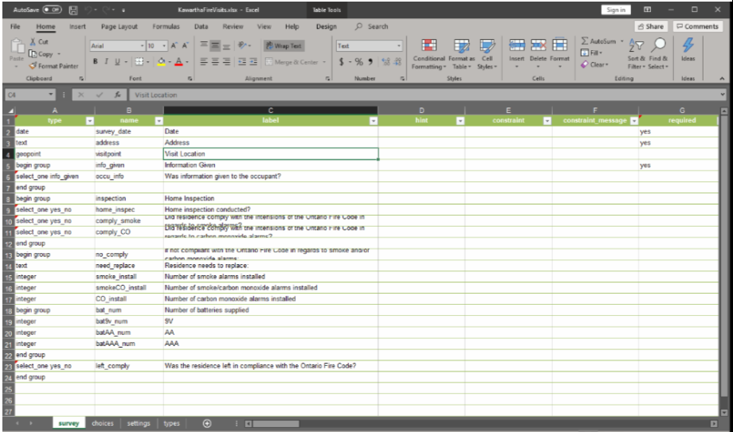

Making the Survey:
The visit form was created using Survey123 with questions specified by the client. The date field was added to allow for reviewing inspection data by day, month, or year. In a similar vein the geopoint is to allow the user to set their GPS location to the correct address. This is helpful for keeping the feature layer from the survey consistent even with poor to no GPS reception. The address is pulled from the map in collector using a link embedded in the pop-up. This opens the survey and fills the "Address" section with the Location field of the parcel that was selected. The link is formatted according to instructions from https://community.esri.com/groups/survey123/blog/2016/07/30/understanding-survey123s-custom-url-scheme.
The link is as follows:
arcgis-survey123://?itemID=f14d16eb03214bd1a344194e814d5eb2&field:address={Location}
arcgis-survey123:// - calls the Survey 123 app
itemID=f14d16eb03214bd1a344194e814d5eb2 - specifies the ID of the survey to call
field:address={Location} - indicates to field to populate in the survey (address) and the field in the map to pull data from (Location)
